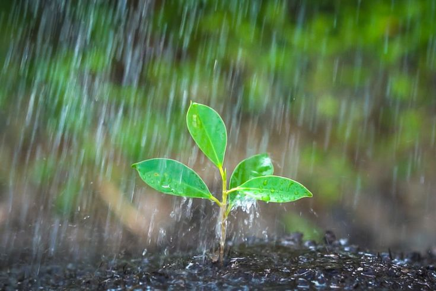

Explore o impacto da água nas áreas rurais e urbanas do Brasil.
A importância da água é imensurável, pois ela é essencial para a vida e o funcionamento de todos os ecossistemas. A água é vital para a sobrevivência humana, sendo necessária para consumo, higiene, alimentação e até mesmo para a produção de energia. Ela é um recurso essencial na agricultura, para irrigação das plantações e criação de animais, e é crucial na indústria, para processos de fabricação, limpeza e resfriamento. Além disso, a água desempenha um papel central na regulação do clima, ajudando a controlar a temperatura do planeta por meio de processos como a evaporação e precipitação. Ela também é essencial para a biodiversidade, mantendo ecossistemas aquáticos como rios, lagos e oceanos, que abrigam inúmeras espécies de flora e fauna.
Veja como a água é tratada nas áreas rurais e como é vital para as atividades agrícolas.
Saiba maisEntenda os desafios da gestão da água nas grandes cidades e os avanços em tecnologias urbanas.
Saiba maisUma reflexão sobre a sustentabilidade do uso da água e as possíveis soluções para o futuro.
Saiba mais